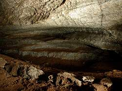
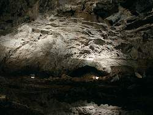

| In English |
| In English |
Heimkehle
Touristische Informationen:
|  |
| Bild: Lösungsformen im Eingangsbereich. |
| Ort: | A7 Ausf Seesen (Harz), B243 66km bis Nordhausen, B80 16km bis Berga, links ab Richtung N/Stolberg, zwischen Uftrungen und Rottleberode, 9km S Stolberg. Stichstraße ca 1km bis zur Höhle. (30,Lf40) |
| Öffnungszeiten: | Mai bis Okt täglich 10-17. Nov bis Apr täglich 10-16. Führungen nach Bedarf, i.a. jede Stunde, mindestens 5 Personen. [2003] |
| Eintrittspreise: | |
| Typ: |
 Karsthöhle,
Gipshöhle, Ganghöhle Karsthöhle,
Gipshöhle, Ganghöhle
|
| Licht: | elektrisch |
| Dimension: | L=2.000m. GR: H=22m, L=65m, B=65m. |
| Führungen: | L=700m, D=45min, V=50.000/a [200?]. |
| Fotografieren: | |
| Zugänglichkeit: | |
| Literatur: |
A.A. (k.J.):
Informationen Karstlandschaft Südharz und Die Heimkehle,
Karstmuseum Heimkehle.
Hrsg: Rat des Bezirkes Halle A.A. (1926): Die Höhle Heimkehle bei Uftrungen, Beitr. Naturdenkmalpfl. 11:151-154, Berlin K. J. Fritz (1980): Die wassergefüllten Hohlräume der Heimkehle, Fundgrube 16(2):54-55, Berlin W. Graf (1972): Die Heimkehle, Ergebnis höhlengenetischer Untersuchungen. Fundgrube 9(3/4):86-90, Berlin A.A. (1929): Die Heimkehle bei Uftrungen, Unsere Heimat: Mitteldt. Halbmonatsschr. (1929):1-6 K. Karlstedt (1972): Zur Fledermausfauna der Heimkehle bei Uftrungen, Nyctalus 4:8-10 W. Remus, M. Spilker, R. Zeising (1962): Die Heimkehle bei Uftrungen am Südharz, Hrsg.: Gesellschaft zur Verbreitung wissenschaftlicher Kenntnisse, Bezirk Halle, Bezirkssektion Geowissenschaften, Arbeitsgruppe Sangerhausen, Höhlenverwaltung "Heimkehle", Uftrungen F. Schuster (1955): Deutschlands größte Gipshöhle - Heimkehle, Heimatbl. Kreis Sangerhausen 8:3-17, Sangerhausen Reinhard Völker (1980): Höhleneis in der Heimkehle, Fundgrube 16(4):125, Berlin Reinhard Völker (1981): Die Heimkehle, Mitt. Karstmus. Heimkehle 1:1-40, Uftrungen Reinhard Völker (1985): Die Erschliessung der Heimkehle, Mitt. Karstmus. Heimkehle 10:1-15, Uftrungen |
| Adresse: | Höhlenverwaltung Heimkehle, Postfach 61, 06548 Uftrungen, Tel: +49-34653-305. |
| Nach unserem Wissen sind die Angaben für das in eckigen Klammern angegebene Jahr korrekt. Allerdings können sich Öffnungszeiten und Preise schnell ändern, ohne daß wir benachrichtigt werden. Bitte prüfen Sie bei Bedarf die aktuellen Werte beim Betreiber, zum Beispiel auf der offiziellen Website in der Linkliste. |
|
Geschichte
 |
| Bild: grüngefärbter Heimensee. |
| 1357 | erstmals urkundlich erwähnt. |
| 1649 | vom anhaltinischen Prinzen besucht. |
| 1920 | Erschließung durch Theodor Wienrich, Licht und Wege. |
| 12-SEP-1920 | Eröffnung. |
| 1944 | Die Nationalsozialisten richten in der Heimkehle ein Werk zur Produktion von Flugzeugteilen ein. |
| 1946 | Sprengung der Zugänge der Höhle. |
| 1953 | Wiedererschließung. |
| 1954 | Wiedereröffnung. |
| 1979 | Gründung des Karstmuseums. |
Bemerkungen
 |
| Bild: grüngefärbter Thyrasee mit Schlauchboot. |
Die Heimkehle ist eine der beiden großen Gipshöhlen in Deutschland, die als Schauhöhlen zugänglich sind. Sie befindet sich am Südrand des Harzes, in dem in einem schmalen von Ost nach West verlaufenden Gebiet Gips an der Oberfläche ansteht. Hier kommt es durch die hohe Löslichkeit des Gipses zur intensiven Verkarstung und damit zur Bildung großräumiger Höhlensysteme. Diese Gipshöhlen sind sicherlich durch ihre Größe die imposantesten Höhlen Deutschlands. Daneben sind Gipskarstgebiete durch ihre sehr kurze Lebensdauer recht selten und so nehmen die Höhlen auch innerhalb Europas eine besondere Rolle ein.
|  |
| Bild: Großer Dom. |
{kind=link}
Die Heimkehle ist durch ihre Nähe zum Grundwasserspiegel ausgezeichnet, so sind viele Räume wassererfüllt. Die Befahrung erfolgte früher mit Booten, da der größte Teil der Höhle einen zusammenhängenden See bildete. Dies ist heute, primär durch den Eingriff des Menschen, nicht mehr so, und die Höhle wird ganz normal zu Fuß befahren.
Der See wurde 1944 für den Einbau von Fabrikanlagen zubetoniert. Damals wurde aufgrund der zunehmenden Bombardierung von Werksanlagen ein Teil der Produktion von Flugzeugteilen hierher verlegt. Die produzierten Flugzeugteile waren für die Junkerswerke in Dessau bestimmt, für die Produktion der JU88. Insgesammt hatten drei Werkshallen Platz. Durch mehrere Tunnel zur Oberfläche war der Transport möglich. Der größte Tunnel war groß genug für Lastwagen. Neben der großen Höhlenräume war für die Wahl dieses Standortes auch die Weichheit des Gipses ausschlaggebend. So konnte mit vergleichsweise geringem Aufwand in kurzer Zeit große Zugangsstollen gebaut werden.
 |
| Bild: Kleiner Dom mit der KZ-Gedenkstätte. |
Nach dem Krieg wurde die Höhle von den Alliierten als Kriegsanlage betrachtet und alle Zugangsstollen gesprengt. Dazu kam es leider auch in der Höhle zu weiteren Beschädigungen, einige Seitenteile sind dadurch verstürzt. Als nach einiger Zeit die Höhle als Natursehenswürdigkeit und historisches Denkmal wieder erschlossen wurde mußten deshalb Eingangs- und Ausgangsstollen neu aufgefahren werden. Der Boden ist weitgehend mit dem Geröll der menschlichen Zerstörungen bedeckt.
In der Höhle befindet sich heute ein Denkmal für die Häftlinge
aus dem KZ Mittelbau Dora bei Nordhausen (Siehe
 Salzaspring),
die
in der Höhle zur Rüstungsproduktion eingesetzt waren.
Sie wurden bei näherrücken der Front in drei Gruppen zu Fuß in
Marsch gesetzt.
Eine Gruppen erreichte Schwerin, die zweite ging im Harz verloren.
Die dritte Gruppe erreichte Gardelegen, wo über 100 Häftlinge in eine
Scheune gesperrt und bei lebendigem Leib verbrannt wurden.
Das Denkmal stammt aus DDR Zeiten und strahlt eine gewisse sozialistische Aura
aus, die rückblickend fast lächerlich wirkt.
Dennoch ist das Denkmal wichtig und weist auf einen wichtigen Teil der
geschichte hin, so dass es sehr begrüßenswert ist, dass es auch heute noch
gepflegt wird.
Salzaspring),
die
in der Höhle zur Rüstungsproduktion eingesetzt waren.
Sie wurden bei näherrücken der Front in drei Gruppen zu Fuß in
Marsch gesetzt.
Eine Gruppen erreichte Schwerin, die zweite ging im Harz verloren.
Die dritte Gruppe erreichte Gardelegen, wo über 100 Häftlinge in eine
Scheune gesperrt und bei lebendigem Leib verbrannt wurden.
Das Denkmal stammt aus DDR Zeiten und strahlt eine gewisse sozialistische Aura
aus, die rückblickend fast lächerlich wirkt.
Dennoch ist das Denkmal wichtig und weist auf einen wichtigen Teil der
geschichte hin, so dass es sehr begrüßenswert ist, dass es auch heute noch
gepflegt wird.
Durch den sackartigen Natureingang kommt es im Winter zur Bildung von Eiszapfen. Die kalte Außenluft sinkt in die tiefere Höhle. Da der Fels selbst noch Temperaturen über dem Gefrierpunkt aufweist, gibt es immer noch Tropfwasser. Dieses gefriert allerdings im Höhlenraum zu Eisstalaktiten und -stalakmiten.
Das Karstmuseum befindet sich im Ausgangsbereich der Höhle, und ist auch ohne Führung zugänglich. Es bietet Austellungen zum Kupferschieferabbau und zur Speläologie. Besonders interessant sind eine große Anzahl von Höhlenquerschnitten, die die Prinzipien bei der Verkarstung des Gipses erläutern.
Der Höhlenparkplatz ist Ausgangspunkt des Karstwanderweges Heimkehle-Pölsfeld. Auf dieser etwa 10km langen Strecke kann man praktisch alle Karsterscheinungen eines Gipskarstgebietes beobachten. Eine kleine Broschüre ist an der Höhlenkasse erhältlich.

|
| Heimkehle Gallerie |
{kind=link}
{kind=link}
{kind=link}
{kind=link}
- Siehe auch
 Suche auf Google nach "Heimkehle"
Suche auf Google nach "Heimkehle" Google Earth Placemark
Google Earth Placemark Höhle Heimkehle,
wohl eine der informativsten Seiten über die Höhle beim Karstwanderweg.
Höhle Heimkehle,
wohl eine der informativsten Seiten über die Höhle beim Karstwanderweg.- Eine der größten deutschen Karsthöhlen,
Lagekarte, kurze Beschreibung sowie eine interessante Geschichte zu den Überresten der Nazizeit.
- Die Heimkehle,
recht düstere Seite (rein grafisch), die wohl die Widergabe einer Broschüre ist.
- Karstexkursion um und in die Heimkehle, Uftrungen,
vor allem eine Beschreibung der Umgebung und ihrer Karsterscheinungen.
- Bildimpressionen der Höhle Heimkehle bei Uftrungen,
Bildgallerie ohne Text.